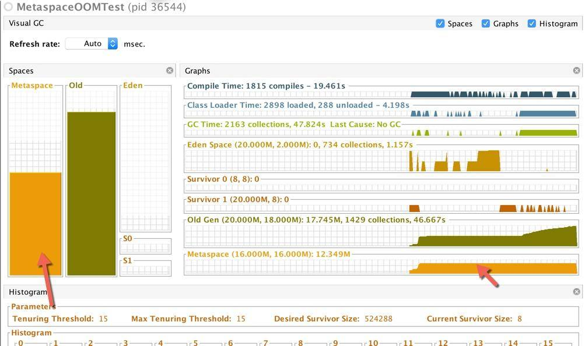
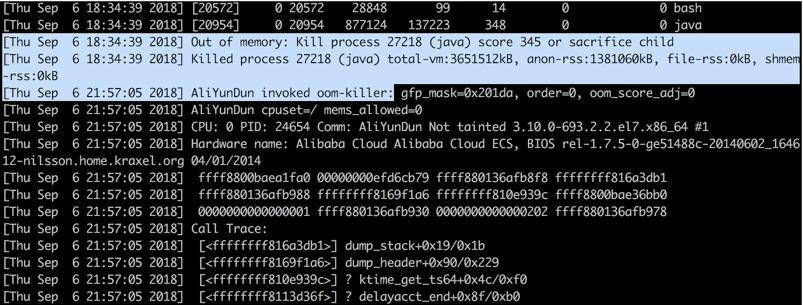

- 00 开篇词：JVM，一块难啃的骨头.md.html
- 01 一探究竟：为什么需要 JVM？它处在什么位置？.md.html
- 02 大厂面试题：你不得不掌握的 JVM 内存管理.md.html
- 03 大厂面试题：从覆盖 JDK 的类开始掌握类的加载机制.md.html
- 04 动手实践：从栈帧看字节码是如何在 JVM 中进行流转的.md.html
- 05 大厂面试题：得心应手应对 OOM 的疑难杂症.md.html
- 06 深入剖析：垃圾回收你真的了解吗？（上）.md.html
- 07 深入剖析：垃圾回收你真的了解吗？（下）.md.html
- 08 大厂面试题：有了 G1 还需要其他垃圾回收器吗？.md.html
- 09 案例实战：亿级流量高并发下如何进行估算和调优.md.html
- 10 第09讲：案例实战：面对突如其来的 GC 问题如何下手解决.md.html
- 11 第10讲：动手实践：自己模拟 JVM 内存溢出场景.md.html
- 12 第11讲：动手实践：遇到问题不要慌，轻松搞定内存泄漏.md.html
- 13 工具进阶：如何利用 MAT 找到问题发生的根本原因.md.html
- 14 动手实践：让面试官刮目相看的堆外内存排查.md.html
- 15 预警与解决：深入浅出 GC 监控与调优.md.html
- 16 案例分析：一个高死亡率的报表系统的优化之路.md.html
- 17 案例分析：分库分表后，我的应用崩溃了.md.html
- 18 动手实践：从字节码看方法调用的底层实现.md.html
- 19 大厂面试题：不要搞混 JMM 与 JVM.md.html
- 20 动手实践：从字节码看并发编程的底层实现.md.html
- 21 动手实践：不为人熟知的字节码指令.md.html
- 22 深入剖析：如何使用 Java Agent 技术对字节码进行修改.md.html
- 23 动手实践：JIT 参数配置如何影响程序运行？.md.html
- 24 案例分析：大型项目如何进行性能瓶颈调优？.md.html
- 25 未来：JVM 的历史与展望.md.html
- 26 福利：常见 JVM 面试题补充.md.html
- 捐赠
11 第10讲：动手实践：自己模拟 JVM 内存溢出场景
本课时我们主要自己模拟一个 JVM 内存溢出的场景。在模拟 JVM 内存溢出之前我们先来看下这样的几个问题。
- 老年代溢出为什么那么可怕？
- 元空间也有溢出？怎么优化？
- 如何配置栈大小？避免栈溢出？
- 进程突然死掉，没有留下任何信息时如何进行排查？
年轻代由于有老年代的担保，一般在内存占满的时候，并没什么问题。但老年代满了就比较严重了，它没有其他的空间用来做担保，只能 OOM 了，也就是发生 Out Of Memery Error。JVM 会在这种情况下直接停止工作，是非常严重的后果。
OOM 一般是内存泄漏引起的，表现在 GC 日志里，一般情况下就是 GC 的时间变长了，而且每次回收的效果都非常一般。GC 后，堆内存的实际占用呈上升趋势。接下来，我们将模拟三种溢出场景，同时使用我们了解的工具进行观测。
在开始之前，请你下载并安装一个叫作 VisualVM 的工具，我们使用这个图形化的工具看一下溢出过程。
虽然 VisualVM 工具非常好用，但一般生产环境都没有这样的条件，所以大概率使用不了。新版本 JDK 把这个工具单独抽离了出去，需要自行下载。
这里需要注意下载安装完成之后请在插件选项中勾选 Visual GC 下载，它将可视化内存布局。
堆溢出模拟
首先，我们模拟堆溢出的情况，在模拟之前我们需要准备一份测试代码。这份代码开放了一个 HTTP 接口，当你触发它之后，将每秒钟生成 1MB 的数据。由于它和 GC Roots 的强关联性，每次都不能被回收。
程序通过 JMX，将在每一秒创建数据之后，输出一些内存区域的占用情况。然后通过访问 http://localhost:8888 触发后，它将一直运行，直到堆溢出。
import com.sun.net.httpserver.HttpContext;
import com.sun.net.httpserver.HttpExchange;
import com.sun.net.httpserver.HttpServer;
import java.io.OutputStream;
import java.lang.management.ManagementFactory;
import java.lang.management.MemoryPoolMXBean;
import java.net.InetSocketAddress;
import java.util.ArrayList;
import java.util.List;
public class OOMTest {
public static final int _1MB = 1024 * 1024;
static List<byte[]> byteList = new ArrayList<>();
private static void oom(HttpExchange exchange) {
try {
String response = "oom begin!";
exchange.sendResponseHeaders(200, response.getBytes().length);
OutputStream os = exchange.getResponseBody();
os.write(response.getBytes());
os.close();
} catch (Exception ex) {
}
for (int i = 0; ; i++) {
byte[] bytes = new byte[_1MB];
byteList.add(bytes);
System.out.println(i + "MB");
memPrint();
try {
Thread.sleep(1000);
} catch (Exception e) {
}
}
}
static void memPrint() {
for (MemoryPoolMXBean memoryPoolMXBean : ManagementFactory.getMemoryPoolMXBeans()) {
System.out.println(memoryPoolMXBean.getName() +
" committed:" + memoryPoolMXBean.getUsage().getCommitted() +
" used:" + memoryPoolMXBean.getUsage().getUsed());
}
}
private static void srv() throws Exception {
HttpServer server = HttpServer.create(new InetSocketAddress(8888), 0);
HttpContext context = server.createContext("/");
context.setHandler(OOMTest::oom);
server.start();
}
public static void main(String[] args) throws Exception{
srv();
}
}
我们使用 CMS 收集器进行垃圾回收，可以看到如下的信息。
命令：
java -Xmx20m -Xmn4m -XX:+UseConcMarkSweepGC -verbose:gc -Xlog:gc,
gc+ref=debug,gc+heap=debug,
gc+age=trace:file=/tmp/logs/gc_%p.log:tags,
uptime,
time,
level -Xlog:safepoint:file=/tmp/logs/safepoint_%p.log:tags,
uptime,
time,
level -XX:+HeapDumpOnOutOfMemoryError -XX:HeapDumpPath=/tmp/logs -XX:ErrorFile=/tmp/logs/hs_error_pid%p.log -XX:-OmitStackTraceInFastThrow OOMTest
输出：
[0.025s][info][gc] Using Concurrent Mark Sweep
0MB
CodeHeap ‘non-nmethods’ committed:2555904 used:1120512
Metaspace committed:4980736 used:854432
CodeHeap ‘profiled nmethods’ committed:2555904 used:265728
Compressed Class Space committed:524288 used:96184
Par Eden Space committed:3407872 used:2490984
Par Survivor Space committed:393216 used:0
CodeHeap ‘non-profiled nmethods’ committed:2555904 used:78592
CMS Old Gen committed:16777216 used:0
…省略
[16.377s][info][gc] GC(9) Concurrent Mark 1.592ms
[16.377s][info][gc] GC(9) Concurrent Preclean
[16.378s][info][gc] GC(9) Concurrent Preclean 0.721ms
[16.378s][info][gc] GC(9) Concurrent Abortable Preclean
[16.378s][info][gc] GC(9) Concurrent Abortable Preclean 0.006ms
[16.378s][info][gc] GC(9) Pause Remark 17M->17M(19M) 0.344ms
[16.378s][info][gc] GC(9) Concurrent Sweep
[16.378s][info][gc] GC(9) Concurrent Sweep 0.248ms
[16.378s][info][gc] GC(9) Concurrent Reset
[16.378s][info][gc] GC(9) Concurrent Reset 0.013ms
17MB
CodeHeap ‘non-nmethods’ committed:2555904 used:1120512
Metaspace committed:4980736 used:883760
CodeHeap ‘profiled nmethods’ committed:2555904 used:422016
Compressed Class Space committed:524288 used:92432
Par Eden Space committed:3407872 used:3213392
Par Survivor Space committed:393216 used:0
CodeHeap ‘non-profiled nmethods’ committed:2555904 used:88064
CMS Old Gen committed:16777216 used:16452312
[18.380s][info][gc] GC(10) Pause Initial Mark 18M->18M(19M) 0.187ms
[18.380s][info][gc] GC(10) Concurrent Mark
[18.384s][info][gc] GC(11) Pause Young (Allocation Failure) 18M->18M(19M) 0.186ms
[18.386s][info][gc] GC(10) Concurrent Mark 5.435ms
[18.395s][info][gc] GC(12) Pause Full (Allocation Failure) 18M->18M(19M) 10.572ms
[18.400s][info][gc] GC(13) Pause Full (Allocation Failure) 18M->18M(19M) 5.348ms
Exception in thread “main” java.lang.OutOfMemoryError: Java heap space
at OldOOM.main(OldOOM.java:20)
最后 JVM 在一阵疯狂的 GC 日志输出后，进程停止了。在现实情况中，JVM 在停止工作之前，很多会垂死挣扎一段时间，这个时候，GC 线程会造成 CPU 飙升，但其实它已经不能工作了。
VisualVM 的截图展示了这个溢出结果。可以看到 Eden 区刚开始还是运行平稳的，内存泄漏之后就开始疯狂回收（其实是提升），老年代内存一直增长，直到 OOM。

很多参数会影响对象的分配行为，但不是非常必要，我们一般不去调整它们。为了观察这些参数的默认值，我们通常使用 -XX:+PrintFlagsFinal 参数，输出一些设置信息。
命令：
java -XX:+PrintFlagsFinal 2>&1 | grep SurvivorRatio
uintx SurvivorRatio = 8 {product} {default}
Java13 输出了几百个参数和默认值，我们通过修改一些参数来观测一些不同的行为。
NewRatio 默认值为 2，表示年轻代是老年代的 1/2。追加参数 “-XX:NewRatio=1”，可以把年轻代和老年代的空间大小调成一样大。在实践中，我们一般使用 -Xmn 来设置一个固定值。注意，这两个参数不要用在 G1 垃圾回收器中。
SurvivorRatio 默认值为 8。表示伊甸区和幸存区的比例。在上面的例子中，Eden 的内存大小为：0.8*4MB。S 分区不到 1MB，根本存不下我们的 1MB 数据。
MaxTenuringThreshold 这个值在 CMS 下默认为 6，G1 下默认为 15。这是因为 G1 存在动态阈值计算。这个值和我们前面提到的对象提升有关，如果你想要对象尽量长的时间存在于年轻代，则在 CMS 中，可以把它调整到 15。
java -XX:+PrintFlagsFinal -XX:+UseConcMarkSweepGC 2>&1 | grep MaxTenuringThreshold
java -XX:+PrintFlagsFinal -XX:+UseG1GC 2>&1 | grep MaxTenuringThreshold
PretenureSizeThreshold 这个参数默认值是 0，意味着所有的对象年轻代优先分配。我们把这个值调小一点，再观测 JVM 的行为。追加参数 -XX:PretenureSizeThreshold=1024，可以看到 VisualVm 中老年代的区域增长。
TargetSurvivorRatio 默认值为 50。在动态计算对象提升阈值的时候使用。计算时，会从年龄最小的对象开始累加，如果累加的对象大小大于幸存区的一半，则将当前的对象 age 作为新的阈值，年龄大于此阈值的对象直接进入老年代。工作中不建议调整这个值，如果要调，请调成比 50 大的值。
你可以尝试着更改其他参数，比如垃圾回收器的种类，动态看一下效果。尤其注意每一项内存区域的内容变动，你会对垃圾回收器有更好的理解。
UseAdaptiveSizePolicy ，因为它和 CMS 不兼容，所以 CMS 下默认为 false，但 G1 下默认为 true。这是一个非常智能的参数，它是用来自适应调整空间大小的参数。它会在每次 GC 之后，重新计算 Eden、From、To 的大小。很多人在 Java 8 的一些配置中会见到这个参数，但其实在 CMS 和 G1 中是不需要显式设置的。
值的注意的是，Java 8 默认垃圾回收器是 Parallel Scavenge，它的这个参数是默认开启的，有可能会发生把幸存区自动调小的可能，造成一些问题，显式的设置 SurvivorRatio 可以解决这个问题。
下面这张截图，是切换到 G1 之后的效果。
java -Xmx20m -XX:+UseG1GC -verbose:gc -Xlog:gc,gc+ref=debug,gc+heap=debug,gc+age=trace:file=/tmp/logs/gc%p.log:tags,uptime,time,level -Xlog:safepoint:file=/tmp/logs/safepoint%p.log:tags,uptime,time,level -XX:+HeapDumpOnOutOfMemoryError -XX:HeapDumpPath=/tmp/logs -XX:ErrorFile=/tmp/logs/hs_error_pid%p.log -XX:-OmitStackTraceInFastThrow OOMTest

可以通过下面这个命令调整小堆区的大小，来看一下这个过程。
-XX:G1HeapRegionSize=
元空间溢出
堆一般都是指定大小的，但元空间不是。所以如果元空间发生内存溢出会更加严重，会造成操作系统的内存溢出。我们在使用的时候，也会给它设置一个上限 for safe。
元空间溢出主要是由于加载的类太多，或者动态生成的类太多。下面是一段模拟代码。通过访问 http://localhost:8888 触发后，它将会发生元空间溢出。
import com.sun.net.httpserver.HttpContext;
import com.sun.net.httpserver.HttpExchange;
import com.sun.net.httpserver.HttpServer;
import java.io.OutputStream;
import java.lang.reflect.InvocationHandler;
import java.lang.reflect.Method;
import java.lang.reflect.Proxy;
import java.net.InetSocketAddress;
import java.net.URL;
import java.net.URLClassLoader;
import java.util.HashMap;
import java.util.Map;
public class MetaspaceOOMTest {
public interface Facade {
void m(String input);
}
public static class FacadeImpl implements Facade {
@Override
public void m(String name) {
}
}
public static class MetaspaceFacadeInvocationHandler implements InvocationHandler {
private Object impl;
public MetaspaceFacadeInvocationHandler(Object impl) {
this.impl = impl;
}
@Override
public Object invoke(Object proxy, Method method, Object[] args) throws Throwable {
return method.invoke(impl, args);
}
}
private static Map<String, Facade> classLeakingMap = new HashMap<String, Facade>();
private static void oom(HttpExchange exchange) {
try {
String response = "oom begin!";
exchange.sendResponseHeaders(200, response.getBytes().length);
OutputStream os = exchange.getResponseBody();
os.write(response.getBytes());
os.close();
} catch (Exception ex) {
}
try {
for (int i = 0; ; i++) {
String jar = "file:" + i + ".jar";
URL[] urls = new URL[]{new URL(jar)};
URLClassLoader newClassLoader = new URLClassLoader(urls);
Facade t = (Facade) Proxy.newProxyInstance(newClassLoader,
new Class<?>[]{Facade.class},
new MetaspaceFacadeInvocationHandler(new FacadeImpl()));
classLeakingMap.put(jar, t);
}
} catch (Exception e) {
}
}
private static void srv() throws Exception {
HttpServer server = HttpServer.create(new InetSocketAddress(8888), 0);
HttpContext context = server.createContext("/");
context.setHandler(MetaspaceOOMTest::oom);
server.start();
}
public static void main(String[] args) throws Exception {
srv();
}
}
这段代码将使用 Java 自带的动态代理类，不断的生成新的 class。
java -Xmx20m -Xmn4m -XX:+UseG1GC -verbose:gc -Xlog:gc,gc+ref=debug,gc+heap=debug,gc+age=trace:file=/tmp/logs/gc%p.log:tags,uptime,time,level -Xlog:safepoint:file=/tmp/logs/safepoint%p.log:tags,uptime,time,level -XX:+HeapDumpOnOutOfMemoryError -XX:HeapDumpPath=/tmp/logs -XX:ErrorFile=/tmp/logs/hs_error_pid%p.log -XX:-OmitStackTraceInFastThrow -XX:MetaspaceSize=16M -XX:MaxMetaspaceSize=16M MetaspaceOOMTest
我们在启动的时候，限制 Metaspace 空间大小为 16MB。可以看到运行一小会之后，Metaspace 会发生内存溢出。
[6.509s][info][gc] GC(28) Pause Young (Concurrent Start) (Metadata GC Threshold) 9M->9M(20M) 1.186ms
[6.509s][info][gc] GC(30) Concurrent Cycle
[6.534s][info][gc] GC(29) Pause Full (Metadata GC Threshold) 9M->9M(20M) 25.165ms
[6.556s][info][gc] GC(31) Pause Full (Metadata GC Clear Soft References) 9M->9M(20M) 21.136ms
[6.556s][info][gc] GC(30) Concurrent Cycle 46.668ms
java.lang.OutOfMemoryError: Metaspace
Dumping heap to /tmp/logs/java_pid36723.hprof …
Heap dump file created [17362313 bytes in 0.134 secs]

但假如你把堆 Metaspace 的限制给去掉，会更可怕。它占用的内存会一直增长。
堆外内存溢出
严格来说，上面的 Metaspace 也是属于堆外内存的。但是我们这里的堆外内存指的是 Java 应用程序通过直接方式从操作系统中申请的内存。所以严格来说，这里是指直接内存。
程序将通过 ByteBuffer 的 allocateDirect 方法每 1 秒钟申请 1MB 的直接内存。不要忘了通过链接触发这个过程。
但是，使用 VisualVM 看不到这个过程，使用 JMX 的 API 同样也看不到。关于这部分内容，我们将在堆外内存排查课时进行详细介绍。
import com.sun.net.httpserver.HttpContext;
import com.sun.net.httpserver.HttpExchange;
import com.sun.net.httpserver.HttpServer;
import java.io.OutputStream;
import java.lang.management.ManagementFactory;
import java.lang.management.MemoryPoolMXBean;
import java.net.InetSocketAddress;
import java.nio.ByteBuffer;
import java.util.ArrayList;
import java.util.List;
public class OffHeapOOMTest {
public static final int _1MB = 1024 * 1024;
static List<ByteBuffer> byteList = new ArrayList<>();
private static void oom(HttpExchange exchange) {
try {
String response = "oom begin!";
exchange.sendResponseHeaders(200, response.getBytes().length);
OutputStream os = exchange.getResponseBody();
os.write(response.getBytes());
os.close();
} catch (Exception ex) {
}
for (int i = 0; ; i++) {
ByteBuffer buffer = ByteBuffer.allocateDirect(_1MB);
byteList.add(buffer);
System.out.println(i + "MB");
memPrint();
try {
Thread.sleep(1000);
} catch (Exception e) {
}
}
}
private static void srv() throws Exception {
HttpServer server = HttpServer.create(new InetSocketAddress(8888), 0);
HttpContext context = server.createContext("/");
context.setHandler(OffHeapOOMTest::oom);
server.start();
}
public static void main(String[] args) throws Exception {
srv();
}
static void memPrint() {
for (MemoryPoolMXBean memoryPoolMXBean : ManagementFactory.getMemoryPoolMXBeans()) {
System.out.println(memoryPoolMXBean.getName() +
" committed:" + memoryPoolMXBean.getUsage().getCommitted() +
" used:" + memoryPoolMXBean.getUsage().getUsed());
}
}
}
通过 top 或者操作系统的监控工具，能够看到内存占用的明显增长。为了限制这些危险的内存申请，如果你确定在自己的程序中用到了大量的 JNI 和 JNA 操作，要显式的设置 MaxDirectMemorySize 参数。
以下是程序运行一段时间抛出的错误。
Exception in thread “Thread-2” java.lang.OutOfMemoryError: Direct buffer memory
at java.nio.Bits.reserveMemory(Bits.java:694)
at java.nio.DirectByteBuffer.
at java.nio.ByteBuffer.allocateDirect(ByteBuffer.java:311)
at OffHeapOOMTest.oom(OffHeapOOMTest.java:27)
at com.sun.net.httpserver.Filter$Chain.doFilter(Filter.java:79)
at sun.net.httpserver.AuthFilter.doFilter(AuthFilter.java:83)
at com.sun.net.httpserver.Filter$Chain.doFilter(Filter.java:82)
at sun.net.httpserver.ServerImpl\(Exchange\)LinkHandler.handle(ServerImpl.java:675)
at com.sun.net.httpserver.Filter$Chain.doFilter(Filter.java:79)
at sun.net.httpserver.ServerImpl$Exchange.run(ServerImpl.java:647)
at sun.net.httpserver.ServerImpl$DefaultExecutor.execute(ServerImpl.java:158)
at sun.net.httpserver.ServerImpl$Dispatcher.handle(ServerImpl.java:431)
at sun.net.httpserver.ServerImpl$Dispatcher.run(ServerImpl.java:396)
at java.lang.Thread.run(Thread.java:748)
启动命令。
java -XX:MaxDirectMemorySize=10M -Xmx10M OffHeapOOMTest
栈溢出
还记得我们的虚拟机栈么？栈溢出指的就是这里的数据太多造成的泄漏。通过 -Xss 参数可以设置它的大小。比如下面的命令就是设置栈大小为 128K。
-Xss128K
从这里我们也能了解到，由于每个线程都有一个虚拟机栈。线程的开销也是要占用内存的。如果系统中的线程数量过多，那么占用内存的大小也是非常可观的。
栈溢出不会造成 JVM 进程死亡，危害“相对较小”。下面是一个简单的模拟栈溢出的代码，只需要递归调用就可以了。
public class StackOverflowTest {
static int count = 0;
static void a() {
System.out.println(count);
count++;
b();
}
static void b() {
System.out.println(count);
count++;
a();
}
public static void main(String[] args) throws Exception {
a();
}
}
运行后，程序直接报错。
Exception in thread “main” java.lang.StackOverflowError
at java.io.PrintStream.write(PrintStream.java:526)
at java.io.PrintStream.print(PrintStream.java:597)
at java.io.PrintStream.println(PrintStream.java:736)
at StackOverflowTest.a(StackOverflowTest.java:5)
如果你的应用经常发生这种情况，可以试着调大这个值。但一般都是因为程序错误引起的，最好检查一下自己的代码。
进程异常退出
上面这几种溢出场景，都有明确的原因和报错，排查起来也是非常容易的。但是还有一类应用，死亡的时候，静悄悄的，什么都没留下。
以下问题已经不止一个同学问了：我的 Java 进程没了，什么都没留下，直接蒸发不见了
why？是因为对象太多了么？
这是趣味性和技巧性非常突出的一个问题。让我们执行 dmesg 命令，大概率会看到你的进程崩溃信息躺在那里。

为了能看到发生的时间，我们习惯性加上参数 T（dmesg -T）。
这个现象，其实和 Linux 的内存管理有关。由于 Linux 系统采用的是虚拟内存分配方式，JVM 的代码、库、堆和栈的使用都会消耗内存，但是申请出来的内存，只要没真正 access过，是不算的，因为没有真正为之分配物理页面。
随着使用内存越用越多。第一层防护墙就是 SWAP；当 SWAP 也用的差不多了，会尝试释放 cache；当这两者资源都耗尽，杀手就出现了。oom-killer 会在系统内存耗尽的情况下跳出来，选择性的干掉一些进程以求释放一点内存。
所以这时候我们的 Java 进程，是操作系统“主动”终结的，JVM 连发表遗言的机会都没有。这个信息，只能在操作系统日志里查找。
要解决这种问题，首先不能太贪婪。比如一共 8GB 的机器，你把整整 7.5GB 都分配给了 JVM。当操作系统内存不足时，你的 JVM 就可能成为 oom-killer 的猎物。
相对于被动终结，还有一种主动求死的方式。有些同学，会在程序里面做一些判断，直接调用 System.exit() 函数。
这个函数危险得很，它将强制终止我们的应用，而且什么都不会留下。你应该扫描你的代码，确保这样的逻辑不会存在。
再聊一种最初级最常见还经常发生的，会造成应用程序意外死亡的情况，那就是对 Java 程序错误的启动方式。
很多同学对 Linux 不是很熟悉，使用 XShell 登陆之后，调用下面的命令进行启动。
java com.cn.AA &
这样调用还算有点意识，在最后使用了“&”号，以期望进程在后台运行。但可惜的是，很多情况下，随着 XShell Tab 页的关闭，或者等待超时，后面的 Java 进程就随着一块停止了，很让人困惑。
正确的启动方式，就是使用 nohup 关键字，或者阻塞在其他更加长命的进程里（比如docker）。
nohup java com.cn.AA &
进程这种静悄悄的死亡方式，通常会给我们的问题排查带来更多的困难。
在发生问题时，要确保留下了足够的证据，来支持接下来的分析。不能喊一句“出事啦”，然后就陷入无从下手的尴尬境地。
通常，我们在关闭服务的时候，会使用“kill -15”，而不是“kill -9”，以便让服务在临死之前喘口气。信号9和15的区别，是面试经常问的一个问题，也是一种非常有效的手段。
小结
本课时我们简单模拟了堆、元空间、栈的溢出。并使用 VisualVM 观察了这个过程。
接下来，我们了解到进程静悄悄消失的三种情况。如果你的应用也这样消失过，试着这样找找它。这三种情况也是一个故障排查流程中要考虑的环节，属于非常重要的边缘检查点。相信聪明的你，会将这些情况揉进自己的面试体系去，真正成为自己的实战经验。
© 2019 - 2023 Liangliang Lee. Powered by gin and hexo-theme-book.